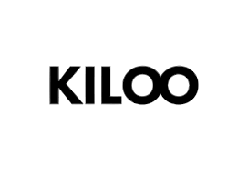
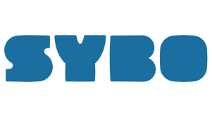

Kiloo Games é uma desenvolvedora de videogames dinamarquesa. Foi fundada em 2000 por Jacob Møller, com foco no desenvolvimento de conteúdo de entretenimento para consoles de jogos e dispositivos portáteis. Em 2008, juntou-se a ele seu irmão, Simon Møller. Juntos, ambos correm Kiloo.

SYBO Games é uma empresa de videogames localizada em Copenhague, Dinamarca, fundada por Sylvester Rishøj Jensen e Bodie Jahn-Mulliner.